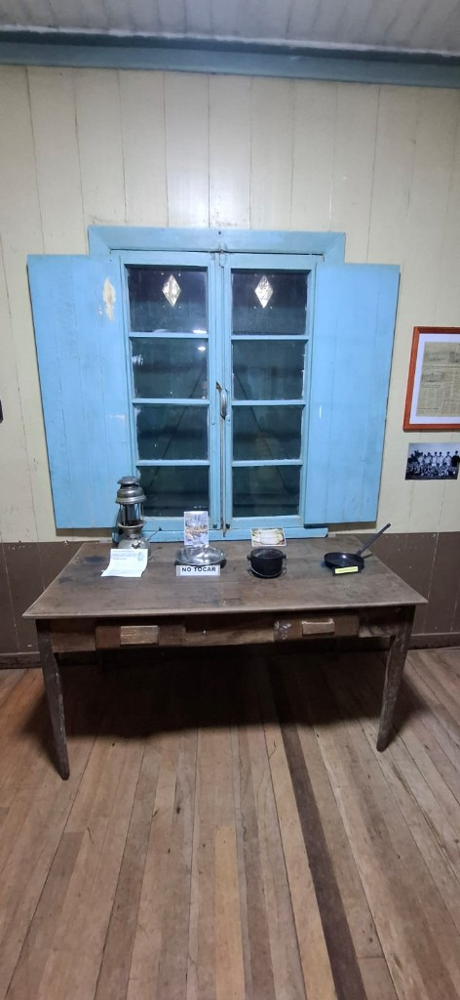
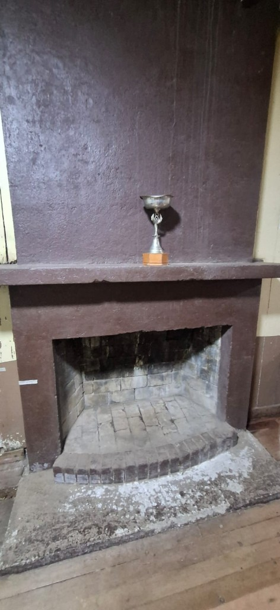
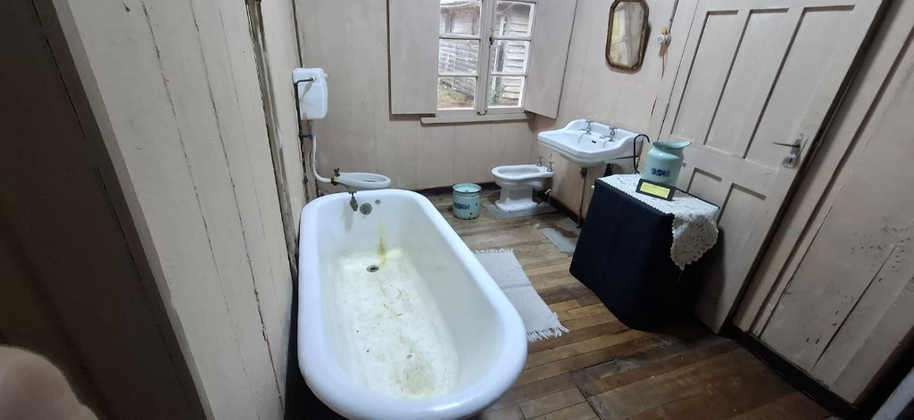
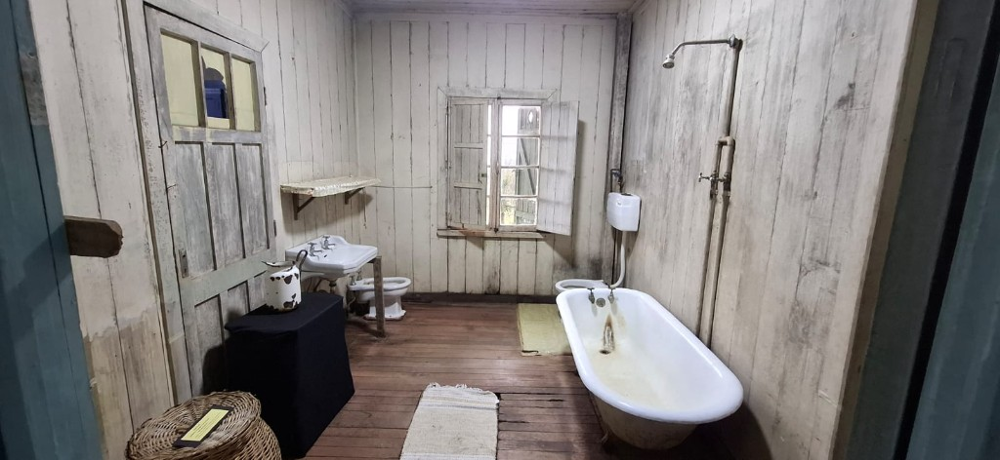
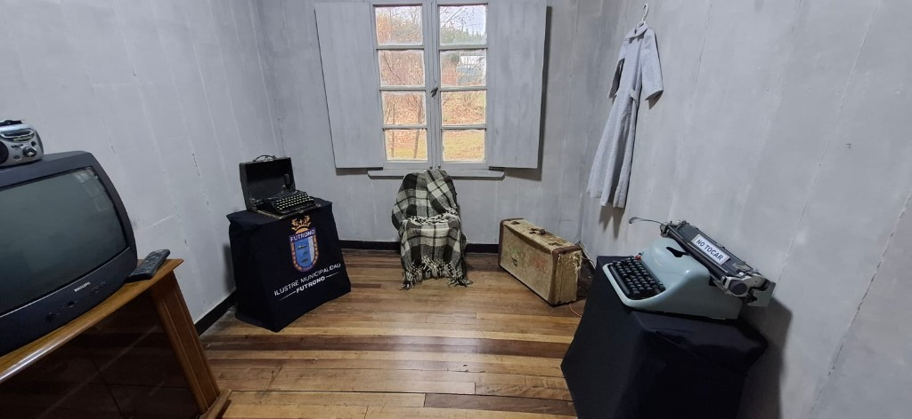
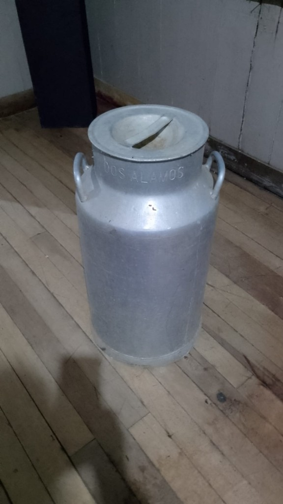
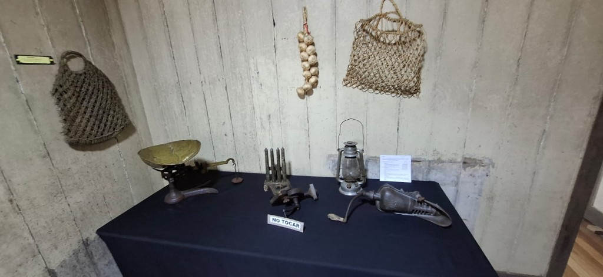
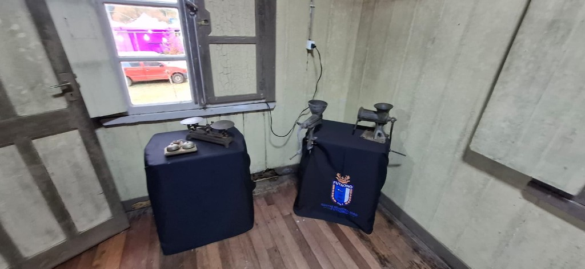
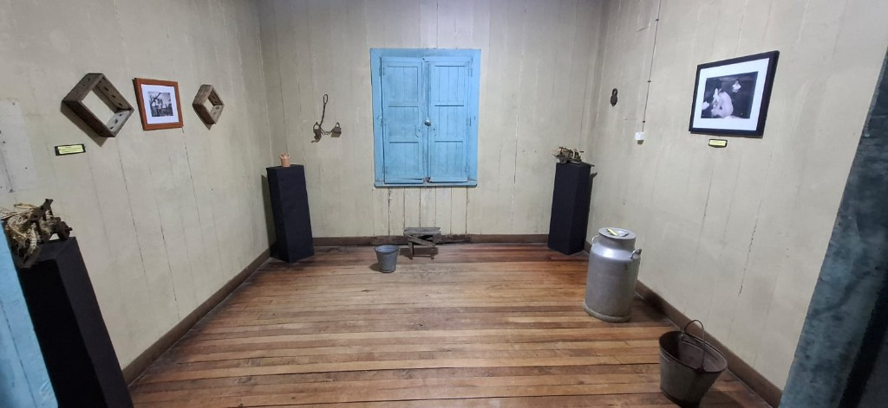

Ventana al pasado
Quinqué, pailas y ventana con postigos celestes.
Toca una imagen para ampliarla.

Quinqué, pailas y ventana con postigos celestes.

Hogar a leña con ladrillos ennegrecidos.

Estufa con pailas y enseres del día a día.

Sanitarios y bañera de porcelana.

Objetos del aseo en paredes de madera.

Objetos personales y documentos del valle.

Remington y portátiles de madera.

Hierro con rueda para voltear la tierra.

Recipiente de la lechería local.

Balanza, molino y redes colgadas.

Pesas y molinos de hierro.

Cántaros, baldes y herramientas rurales.